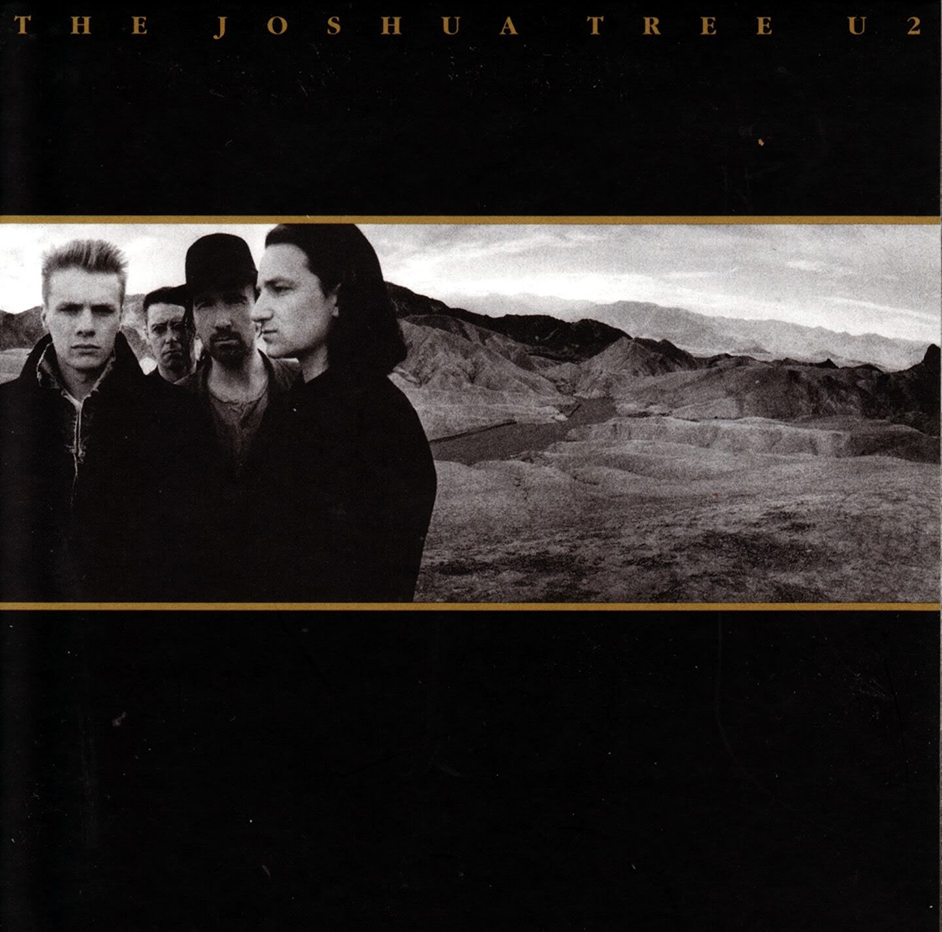

The Joshua Tree (en español: El árbol de Josué), es el nombre del quinto álbum de estudio de la banda rock irlandesa U2. Fue lanzado por Island Records el 9 de marzo de 1987. La ingeniería y la producción fueron nuevamente de Brian Eno y Daniel Lanois. Es uno de los mejores y más exitosos discos de la banda, e incluye temas tan famosos como With Or Without You o Where The Streets Have No Name. Se convirtió rápidamente en un éxito de ventas mundial, alcanzando actualmente las 28 millones de copias, y proseguido de una igualmente exitosa gira por todo el mundo. El lugar donde sacaron el nombre y se tomaron parte de las fotos del álbum es el Parque Nacional de Árboles de Josué. La foto del que acabaría siendo icónico árbol de Josué de la contraportada y otras fueron tomadas en los alrededores del Parque nacional del Valle de la Muerte.
